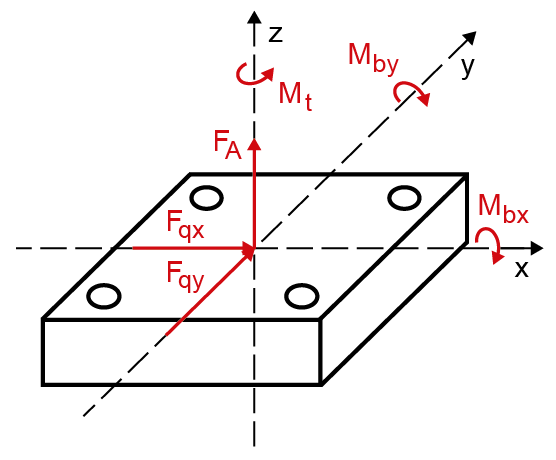
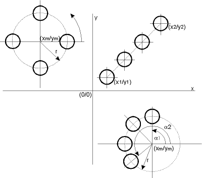

|
|
|


任意螺栓位置的多螺栓连接
在多螺栓连接中，您可以在任意位置定义螺栓。它们随后会受到剪切力、两个方向的弯矩和扭转力矩的影响。这些螺栓位置的值在选项卡中。螺栓上的载荷分布是在假设刚性板通过螺栓位置处的弹簧连接的基础上计算的。不通过形心的力必须移动到形心点才能输入。您可以通过输入系数来表示不同的螺栓直径。
对于要计算校核的螺栓，输入系数 = 1。校核始终针对选项卡中指定的螺栓执行。对于布置中的所有其他螺栓，设置一个大于或小于 1 的系数。该系数表示较大或较小螺栓相对于已执行校核的螺栓的横截面状况。例如，对于横截面为两倍大的螺栓，输入系数 = 2。
计算螺栓有以下选项：
- 验证所有螺栓
所有螺栓的安全系数要么显示在结果概览的表格中，要么显示在报告中。您可以选择最关键的螺栓然后验证它。
此选项仅在定义中使用系数 = 1 时才有用。 - 验证单个螺栓
输入螺栓编号以验证特定螺栓。

图 42.3：KISSsoft 中力和力矩的定义
在选项卡中输入运行数据后，您可以在选项卡中定义螺栓位置。您可以在表格中输入螺栓位置，也可以从文件导入。产生的轴向力以及传递剪切力所需的夹紧载荷也显示在表格中。
您还可以定义推力螺栓的额外系数，其中假定压缩直接通过板传递。中性轴可以通过推力螺栓系数移动。在 [80] 中，在关键词“多螺栓板连接”下，例如假定平均压力点为 1/4 板高。
如果未选择选项，则使用特定螺栓上的所需夹紧载荷进行计算。
计算所需夹紧载荷时，您还可以考虑为剪切力设置的代数前缀运算符（正负号）。由扭转和剪切力引起的剪切力随后在特定点相加，在其他点相减。仅当您知道剪切力的方向且该力恒定时，才应使用前缀运算符。默认设置是所有剪切力值相加，无论涉及何种力的方向。
单击尺寸计算按钮 ，在选项卡的表格（上方，右侧）中显示此窗口，您可以在其中输入不同的配置。所选数量的螺栓随后会以规则间隔自动插入到所选配置中。
可能的配置有：
- 直线（值：起点、终点、螺栓数量）
- 圆（值：圆心、半径、螺栓数量）
- 圆弧段（值：半径、起始角、结束角、螺栓数量）

图 42.4：位置尺寸计算选项
Multi-bolted joint with any bolt position
In a multi-bolted joint you can define bolts in any position. They are then affected by shearing force, a bending moment in two directions, and a torsional moment. The values for these bolt positions are in the tab. The load distribution on the bolts is calculated on the assumption that rigid plates are connected by springs at the bolt positions. Forces which do not affect the centroid point must be moved to the centroid point so they can be entered. You can represent different bolt diameters by entering a coefficient.
Enter coefficient = 1 for the bolt for which you want to calculate the proof. The proof is always performed for the bolt specified in the tab. For all the other bolts in the arrangement, set a coefficient that is either greater than or less than 1. The coefficient represents the cross-sectional condition of the larger or smaller bolt compared to the bolt for which the proof has been performed. For example, enter coefficient = 2 for a bolt whose cross section is twice the size.
There are the following options for calculating bolts:
- Validation for all bolts
The safeties for all the bolts are displayed either in a table in the results overview or in the report. You can select the most critical bolt and then validate it.
This option is only useful if the factors = 1 are used in the definition. - Validate a single bolt
Enter the bolt number to validate a specific bolt.
Figure 42.3: Definitions of forces and moments in KISSsoft
Once you have entered the operating data in the tab, you can define the bolt positions in the tab. You can either enter the bolt positions in a table or import them from a file. The resulting axial forces, and also the clamp loads required to transmit shearing force, are also displayed in the table.
You can also define an additional Factor for thrust bolts, in which it is assumed that compression is transmitted directly via the plates. The neutral axis can be moved by the Factor for thrust bolts. In [80], under the keyword "Multi-bolted Plate Joint", for example, an average pressure point of 1/4 plate height is assumed.
If the option is not selected, the required clamp load on the particular bolt is used for the calculation.
When you calculate the required clamp load, you can also take into account the algebraic prefix operator set for the shearing forces. Shearing forces caused by torsion and shearing force are then added at specific points and subtracted at other points. You should only include the prefix operator if you know the direction of the shearing force and if this force is constant. The default setting is that all the shearing force values are added together, no matter which direction of force is involved.
Click the Sizing button in the table (above, on the right) in the tab to display this window, in which you can enter different configurations. The selected number of bolts is then automatically inserted at regular intervals in the selected configuration.
The possible configurations are:
- line (values for: starting point, end point, number of bolts)
- circle (values for: center point, radius, number of bolts)
- circle segment (values for: radius, starting angle, end angle, number of bolts)
Figure 42.4: Position sizing options